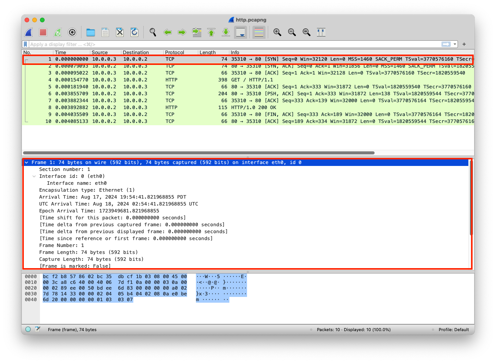

This layer defines the physical connection between devices. It has no intelligence built-in, and it's responsible for transmitting and receiving a bit-stream 1's and 0's (physical signals) over a physical medium such as cable, fiber, or wireless. The bits are represented based on the type of medium.
An electrical cable that is used to transmit radio frequency signals from one point to another
Binary is a base-2 number system where there are only 2 possible values 1s or 0s
0110001101101100011000010111001001101011001000000110001101101111011011
A bit is a binary digit, the smallest unit of storage on a computer
1 On
0 Off
A byte is equal to 8 bits, usually a byte represents a character like the letter C, which is 01000011 in bits, but some characters may require more than one 1 byte
00110001 is equal to 1
01110100 01100101 01110011 01110100 is equal to test
Latency is the amount of time data takes to reach its destination
In the PCAP file, you can get an overview of the data by clicking on the entry, then Frame 1 (In this case, it's the metadata gathered about the data), which includes detailed info about the data that are transmitted or received, some of the info, like interface id, name, and description, are not part of the data, but they are in Wireshark for analysis and troubleshooting network problems
from http.server import SimpleHTTPRequestHandler
from socketserver import TCPServer
from io import BytesIO
from gzip import GzipFile
from datetime import datetime
from contextlib import suppress
with suppress(Exception):
from netifaces import gateways, ifaddresses, AF_INET, AF_LINK
print("The default network interface is: ",gateways()['default'][AF_INET][1])
print("The default network interface mac address is: ",ifaddresses(gateways()['default'][AF_INET][1])[AF_LINK])
class Server(SimpleHTTPRequestHandler):
def do_GET(self):
compressed = False
content = b'<HTML><h1>Hello World!</h1></HTML>'
if len(content) > 0:
if 'accept-encoding' in self.headers:
if 'gzip' in self.headers['accept-encoding']:
bytes_ = BytesIO()
with GzipFile(fileobj=bytes_, mode='w', compresslevel=5) as f:
f.write(content)
f.close()
content = bytes_.getvalue()
compressed = True
self.send_response(200)
if compressed:
self.send_header('content-encoding', 'gzip')
self.send_header('content-length', len(content))
self.end_headers()
self.wfile.write(content)
def log_message(self, format, *args):
print("[{}] - {}:{} - {} {}".format(datetime.now().strftime("%m/%d/%Y %H:%M:%S"), self.client_address[0],self.client_address[1],args[0],args[1]))
TCPServer(('0.0.0.0', 80), Server).serve_forever()
The data is transmitted and transported in raw format
| Layer | Protocol | PDU | Info | Ports | IPs | MACs |
| Transport Layer | TCP | Segments | 3 Way handshake Process (SYN) | Src Port: 35310 Dst Port: 80 |
||
| Network Layer | IP | Packets | 3 Way handshake Process (SYN) | Src Port: 35310 Dst Port: 80 |
Src IP: 10.0.0.3 Dst IP: 10.0.0.2 |
|
| Data Link Layer | Ethernet | Frames | 3 Way handshake Process (SYN) | Src Port: 35310 Dst Port: 80 |
Src IP: 10.0.0.3 Dst IP: 10.0.0.2 |
Src MAC: bc:35:db:cf:1b:03 |
| Physical Layer | Coax | Bits | 01001000 01010100 01010100 | 01001000 01010100 | 01001000 01010100 | 01001000 01010100 |
